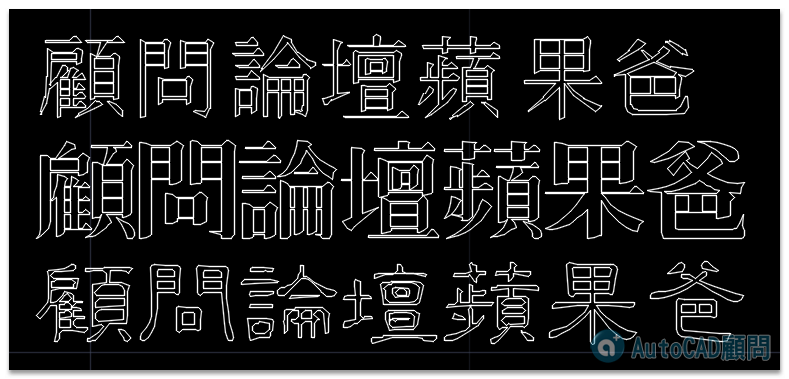

問：如何在AutoCAD中寫出空心字呢？
答：1.需要用空心字的字體，我用了這三個大字體
rubonm.shx
omv.shx
oli.shx
2.如果沒有字體，可用Express工具的「文字分解TXTEXP指令」，將文字分解為 2D線段。
[練習]TXTEXP指令 繪製3D立體文字
https://www.autocad-tw.com/t2078-topic
[互助]字體檔分享交流~
https://www.autocad-tw.com/t18145-topic